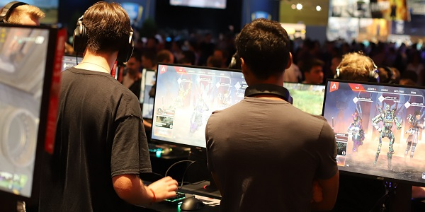

hey creeps! Help me make bigger and professional video contents on our very own "radoncreepgaming" channel
Be part of radoncreepgaming days-ones. Help support the channel by becoming a patron, through the "become a patron" link below.
If you have any problem trying to figure out how to use this platform, don't hesitate to message me on my patreon profile through the link also.
